Формирование фигур в Visio 2000 Ru и Visio 2002 Ru.
 Объекты в Visio, как известно, представлены в виде векторов, векторы, с точки зрения программы, состоят из вершин. Вершины векторов являются точками. Проследим весь процесс формирования линий и фигур.
Объекты в Visio, как известно, представлены в виде векторов, векторы, с точки зрения программы, состоят из вершин. Вершины векторов являются точками. Проследим весь процесс формирования линий и фигур.
Линии.
Простая линия в Visio состоит из 2-х точек и является одномерной фигурой. Поэтому только для нее в ТаблицеФигур есть раздел 1-D конечные точки. В этом разделе 4 ячейки:
- Ячейка BeginX – это X координата начала линии.
- Ячейка BeginY – это Y координата начала линии.
- Ячейка EndX – это X координата конца линии.
- Ячейка EndY – это Y координата конца линии.

Именно эти координаты и выводятся в окне “Позиция и размер”
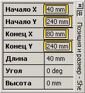
Прямоугольники.
По умолчанию программа не производит заливку незамкнутых фигур. К примеру нарисуем 3 стороны прямоугольника.
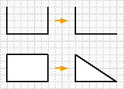
Visio не произвел заливку. У этой фигуры определено начало ломанной и конец. И удаляя 1 из точек, Visio автоматически удаляет вектор. Но если закончить прямоугольник, то удалив 1 из вершин, ломаной линии не получится, а будет прямоугольный треугольник. Т.е Visio совмещает конец и начало ломаной линии и дальше на размыкает ее.
При создании любой фигуры, Visio сразу создает ТаблицуФигуры. Обратимся к разделу Геометрия. В нем перечислены строки формирования начерченной фигуры.
В разделе Геометрия1 есть в первой строке 4 ячейки:
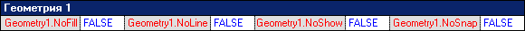
- Ячейка Geometry1.NoFill отвечает, как раз, именно за разрешение заливки фигуры. Если записать в ячейку 0, то программа произведет заливку незамкнутой фигуры. Если 1, то заливки не будет даже если фигура замкнутая.
- Ячейка Geometry1.NoLine отвечает за отображение линий у объекта. Если записать 1, то линия отображаться не будет. По умолчанию, записано в ячейку 0.
- Ячейка Geometry1.NoShow отвечает за полное отображение фигуры, т.е. будет ли она вообще отображаться программой или нет. Если записать 1, то фигура отображаться не будет, но ее можно будет выделить.
- Ячейка Geometry1.NoSnap отвечает за использование контура или элементов фигуры как шаг.
Чтобы это понять, надо нарисовать круг и линию и попробовать переместить конец линии на контур круга. Конец линии станет скользить по контуру, т.е. минимальное перемещение конца линии стало меньше, чем шаг сетки. Теперь перемещение по линии контура будет считаться минимальным шагом. Если записать в ячейку 1, то этого происходить не будет, т.е. шаг перемещения линии останется неизменным и будет равен шагу сетки.
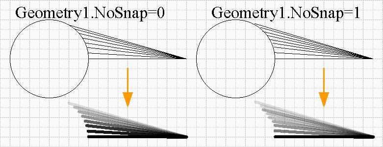
Следующими строками идут вектора.
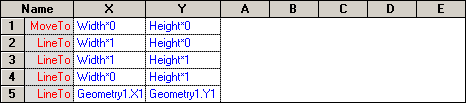
Начало фигуры обозначается строкой MoveTo и она же является самой верхней строкой. Столбцы X и Y в данном случае показывают расположение вершин в локальной системе отсчета фигуры.
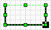
Если переместить курсор на эту ячейку, то на фигуре точка с этими координатами будет выделена черным квадратом. Ниже идут строки LineTo, т.е. куда везти линию и координаты этой точки. Таким образом получается, что прямоугольник будет состоять из точки начала и 4-х векторов. Если дочертить 4-й вектор, то именно так оно и будет. Если вставить еще пару строку ниже и изменить тип строки на MoveTo, то все равно 2 фигуры не получится. Просто получится разрыв между векторами, хотя начало и конец у фигуры все равно будет 1. Можно даже составить 2 замкнутых прямоугольника (по точкам вручную), и применить заливку.
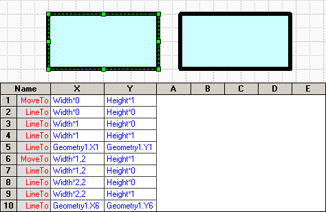
При черчении линий и ломаных есть возможность назначить стрелки концам линии, но если применить заливку линии, путем записи 0 в ячейку Geometry1.NoFill, автоматически исчезнут стрелки. Равно как существует и обратный процесс, т.е. если нарисовать прямоугольник и записать 1, то станет возможным назначить стрелки фигуре.
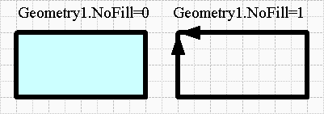
Окружности.
Окружность можно сделать по разному. Её можно составить из 4 дуг или просто выбрать инструмент Эллипс и начертить. Но с точки зрения программы это будут разные объекты.
Рассмотрим “простой” способ, т.е. выберем инструмент Эллипс и начертим его. Затем зайдем в ТаблицуФигур. В разделе Геометрия1, вместо MoveTo и 4-х LineTo стала всего 1 строка Ellipse.
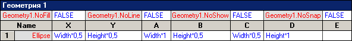
Таким образом для программы эллипс является примитивной фигурой. Прямоугольник тоже в своем роде “примитивная фигура”, т.к. для построения прямоугольника надо знать 2 точки (и угол конечно, если он отличается от 0), но видимо создатели программы решили иначе.
Помимо стандартных ячеек X и Y записаны также следующие ячейки:
- Ячейка A – это X координата точки пересечения контура эллипса с большой осью.
- Ячейка B – это Y координата точки пересечения контура эллипса с большой осью.
- Ячейка C – это X координата точки пересечения контура эллипса с малой осью.
- Ячейка D – это Y координата точки пересечения контура эллипса с малой осью.
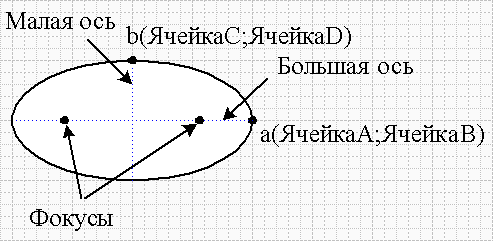
Трансформация.
Теперь рассмотрим процесс трансформации одного объекта в другой. Как известно, все фигуры из трафаретов перемещаемые на рабочую страницу, сохраняют свои связи не с мастером трафарета, а копируются в трафарет документа и уже связываются с локальным мастером. Это легко увидеть если открыть трафарет документа (Visio 2000: Окно>Показать трафарет документа, Visio 2002:Файл>Трафареты>Трафарет чертежа) и затем открыть трафарет Basic Shapes. При перемещении прямоугольника на страницу чертежа, он автоматически появляется в локальном трафарете.
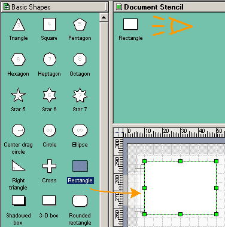
Это сделано для того, чтобы не возникло проблем на другом компьютере или с программами просмотра (типа Visio Viewer). Ведь такого трафарета на другом компьютере могли и не устанавливать. Теперь поместим на страницу еще с десяток прямоугольников и изменим из размеры. Как видите, на локальном трафарете так и остался 1 мастер. Теперь в каждый прямоугольник внесите надписи и Другие свойства. Затем откройте локальный мастер для редактирования и откройте ТаблицуФигур. Теперь выделите в разделе Геометрия1 любую ячейку в строке LineTo, нажмите правой кнопкой мыши и выберите Изменить тип строки. В открывшемся окне отметьте Ellipse и нажимайте ОК.
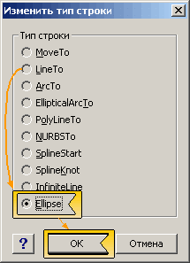
Теперь в разделе Геометрия1 всего 1 строка и мастер из прямоугольника стал эллипсом. Если закрыть окно редактирования, то увидим, что все фигуры на листе сменились на эллипсы, но надписи и свойства остались неизменными.
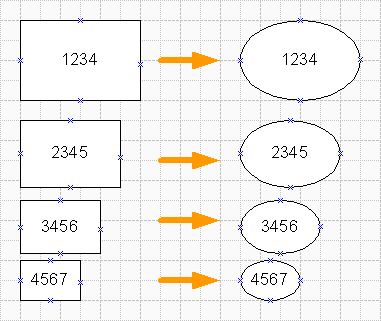
Обратный процесс тоже легко сделать, но это, как говорится, уже совсем другая история…
В начало раздела
Предыдущая статья
Следующая статья
Автор: Ничков Алексей (Digitall)